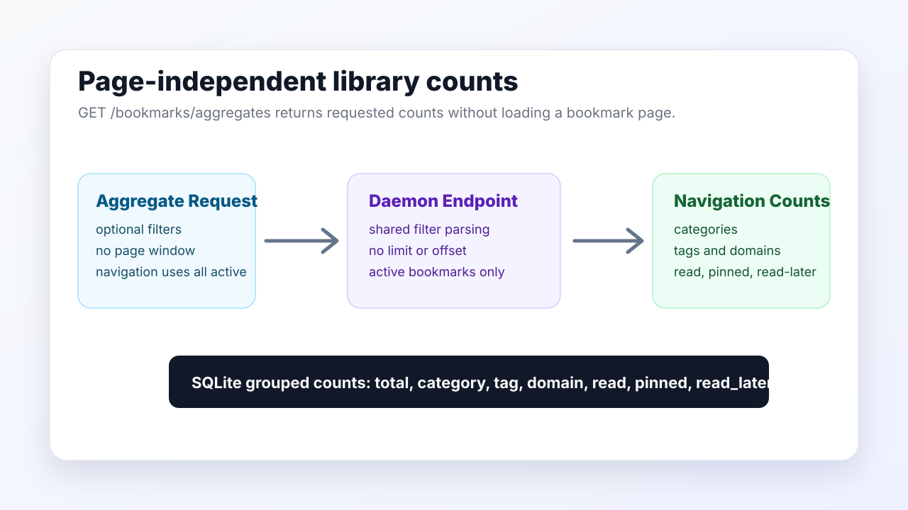

Little Imp Task Report
Aggregate Count Endpoints

Before
Library pages had daemon pagination and filters, but navigation counts were still split across category, tag, and domain sources and were not represented by one page-independent library aggregate contract.
Problem
Counts for category, tag, domain, read, pinned, and read-later states need to stay accurate independently from the loaded result page. The endpoint also needs to support approved filter contexts without making sidebar navigation collapse under the selected facet.
Changes Added
- Added
GET /bookmarks/aggregateswith shared bookmark filter parsing and no pagination or sorting. - Added grouped SQLite count queries for categories, tags, domains, read state, pinned state, and read-later state.
- Wired
useBookmarkssidebar category, tag, and domain badges to page-independent active-library aggregate data. - Regenerated generated API docs, API contract JSON, and OpenAPI output.
Result
The library can request aggregate counts independently from the current bookmark page. Existing category metadata still comes from the category tree, while navigation badge counts use the aggregate endpoint without selected tag, domain, or category filters.
Verification
npm run lintnpm run type-checknpx vitest run src/lib/api.test.ts src/hooks/use-bookmarks.test.tsnpm run test:daemonnpm run docs:apinpm run docs:api:checknpm run build
Implementation Notes
The repository now shares active bookmark filter construction between list, export, and aggregate queries. The aggregate route ignores limit, offset, sort, and direction by design. The frontend navigation query calls the aggregate endpoint without selected facet filters so other sidebar and domain options remain visible.
Files Changed
daemon/src/db/bookmark-repository.tsdaemon/src/routes/bookmarks.tsdaemon/src/api/contract.tssrc/lib/api.tssrc/hooks/use-bookmarks.tsdaemon/src/test/integration/bookmarks.test.tssrc/lib/api.test.tssrc/hooks/use-bookmarks.test.ts